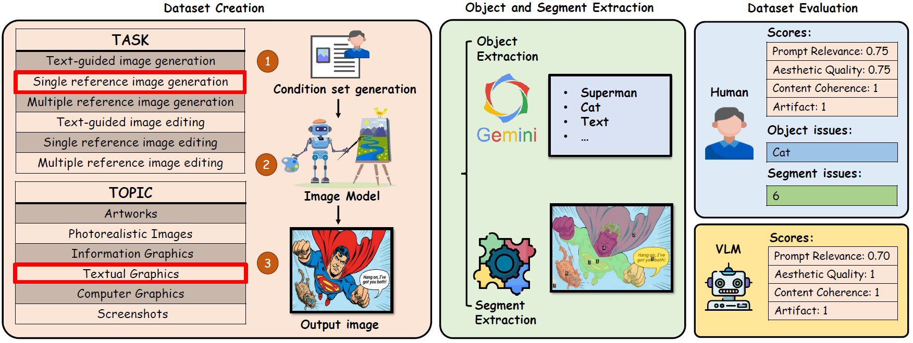
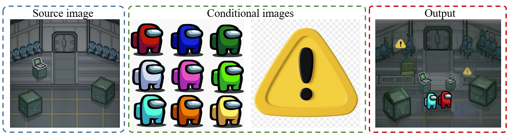
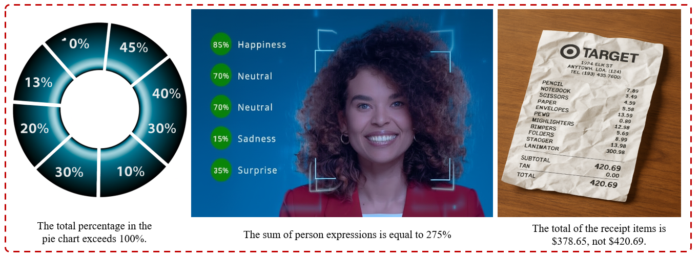
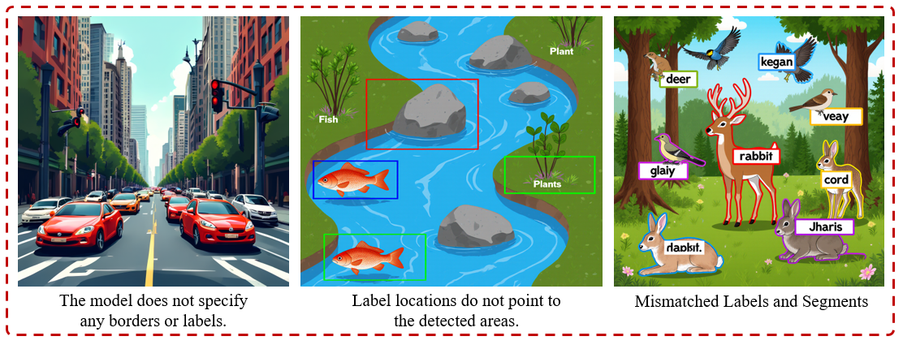
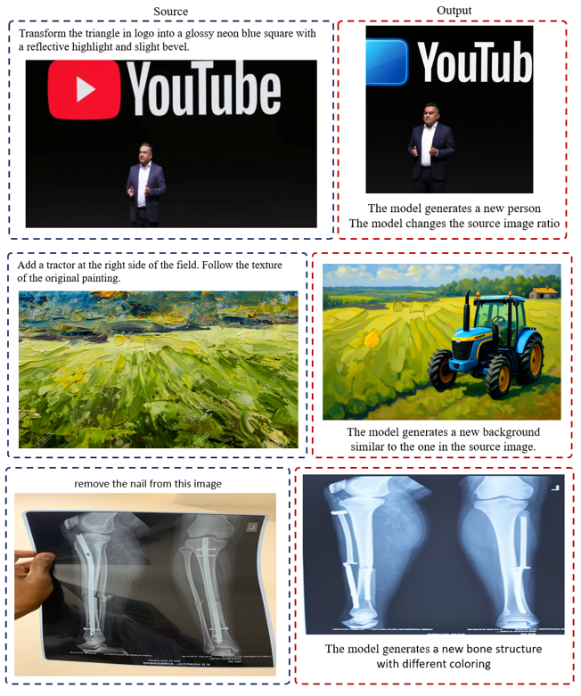
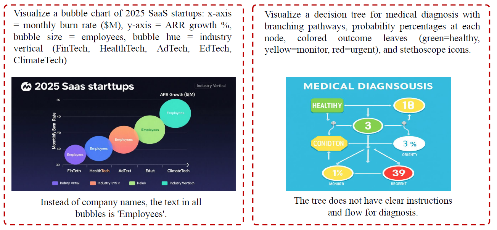
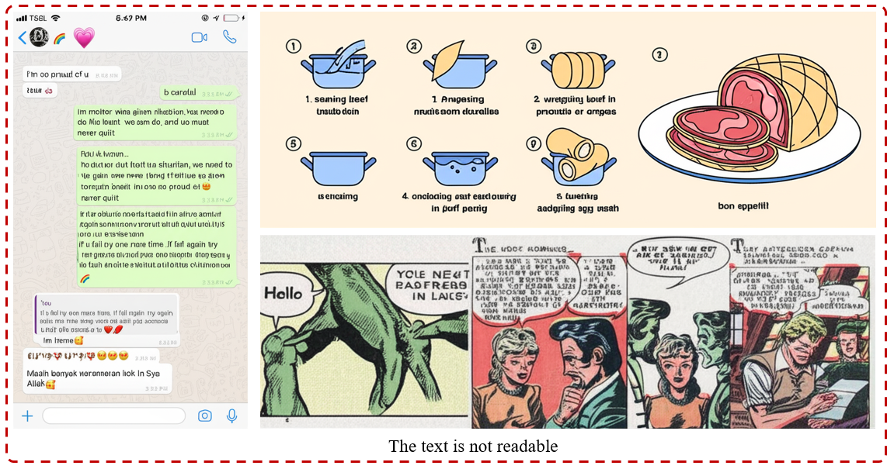

We build a 3.6K conditions set, 6-task x 6-domain benchmark with 20K explainable human annotations that stress-tests image generation and editing, shows where models break (notably local edits and text-heavy content), benchmarks against VLM-as-judge baselines, and identifies key failure modes.
Advances in diffusion, autoregressive, and hybrid models have enabled high-quality image synthesis for tasks such as text-to-image, editing, and reference-guided composition. Yet, existing benchmarks remain limited, either focus on isolated tasks, cover only narrow domains, or provide opaque scores without explaining failure modes. We introduce ImagenWorld, a benchmark of 3.6K condition sets spanning six core tasks (generation and editing, with single or multiple references) and six topical domains (artworks, photorealistic images, information graphics, textual graphics, computer graphics, and screenshots). The benchmark is supported by 20K fine-grained human annotations and an explainable evaluation schema that tags localized object-level and segment-level errors, complementing automated VLM-based metrics. Our large-scale evaluation of 14 models yields several insights: (1) models typically struggle more in editing tasks than in generation tasks, especially in local edits. (2) models excel in artistic and photorealistic settings but struggle with symbolic and text-heavy domains such as screenshots and information graphics. (3) closed-source systems lead overall, while targeted data curation (e.g., Qwen-Image) narrows the gap in text-heavy cases. (4) modern VLM-based metrics achieve Kendall accuracies up to 0.79, approximating human ranking, but fall short of fine-grained, explainable error attribution. ImagenWorld provides both a rigorous benchmark and a diagnostic tool to advance robust image generation.
We introduce ImagenWorld, a large-scale, human-centric benchmark designed to stress-test image generation models in real-world scenarios. Unlike prior evaluations that focus on isolated tasks or narrow domains, ImagenWorld is organized into six domains: Artworks, Photorealistic Images, Information Graphics, Textual Graphics, Computer Graphics, and Screenshots, and six tasks: Text-to-Image Generation (TIG), Single-Reference Image Generation (SRIG), Multi-Reference Image Generation (MRIG), Text-to-Image Editing (TIE), Single-Reference Image Editing (SRIE), and Multi-Reference Image Editing (MRIE). The benchmark includes 3.6K condition sets and 20K fine-grained human annotations, providing a comprehensive testbed for generative models. To support explainable evaluation, ImagenWorld applies object- and segment-level extraction to generated outputs, identifying entities such as objects and fine-grained regions. This structured decomposition enables human annotators to provide not only scalar ratings but also detailed tags of object-level and segment-level failures.
1. Failing to Precisely Follow Instructions
Prompt:
Edit image 1. Replace the top-left crate with the yellow warning sign from image 3. Place the pink crewmate (from the center of image 2) and the yellow crewmate (from the bottom right of image 2) standing side-by-side on the central doorway in image 1. Ensure all new elements are integrated with correct perspective, lighting, and scale.
2. Numerical Inconsistencies
3. Segments and Labeling Issues
4. Generating New Image in Editing
5. Plots and chart errors
6. Unreadable Text
@inproceedings{}